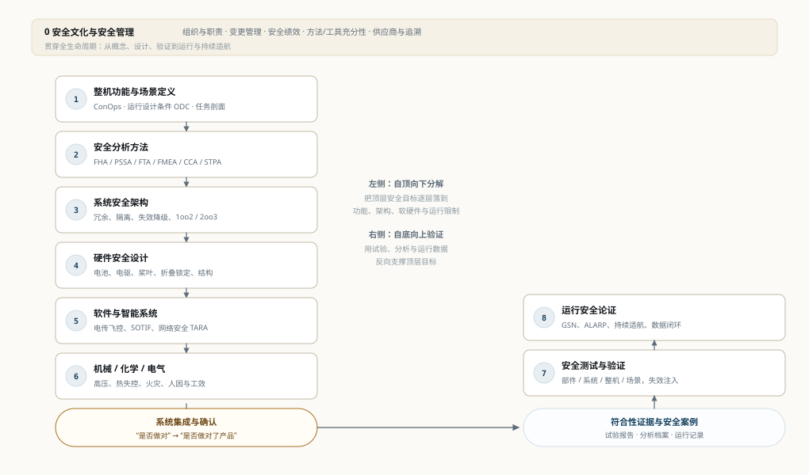
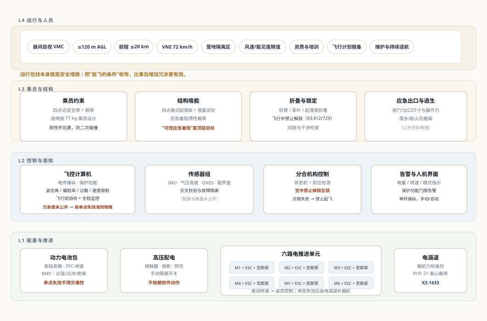
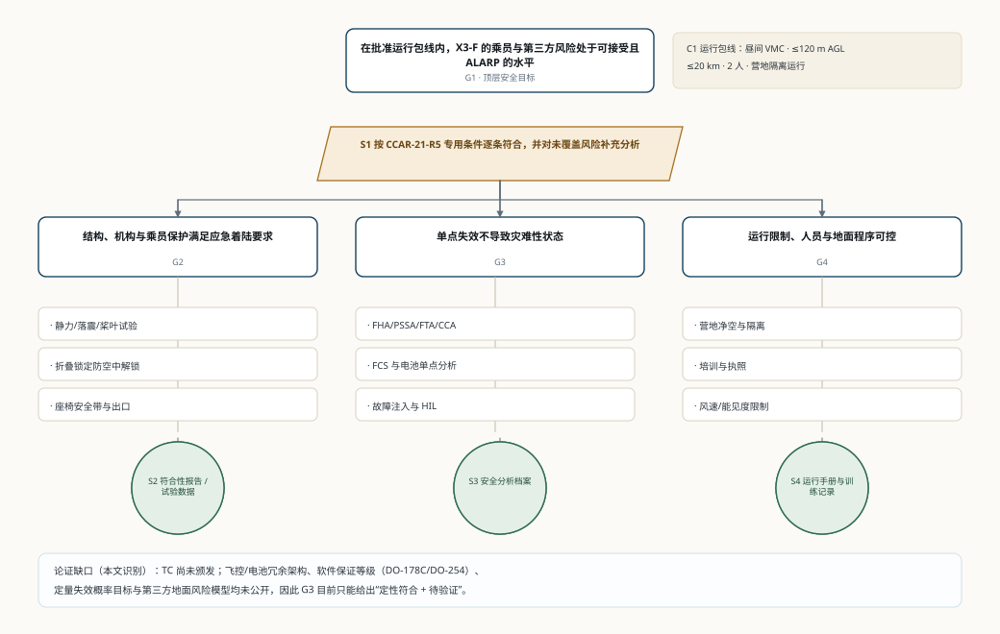
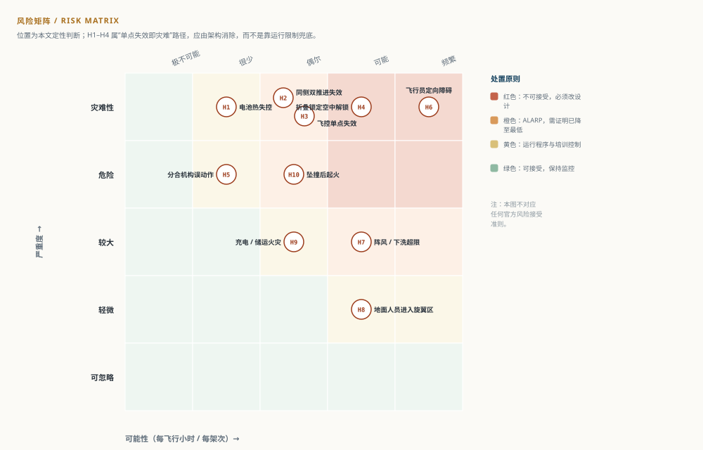
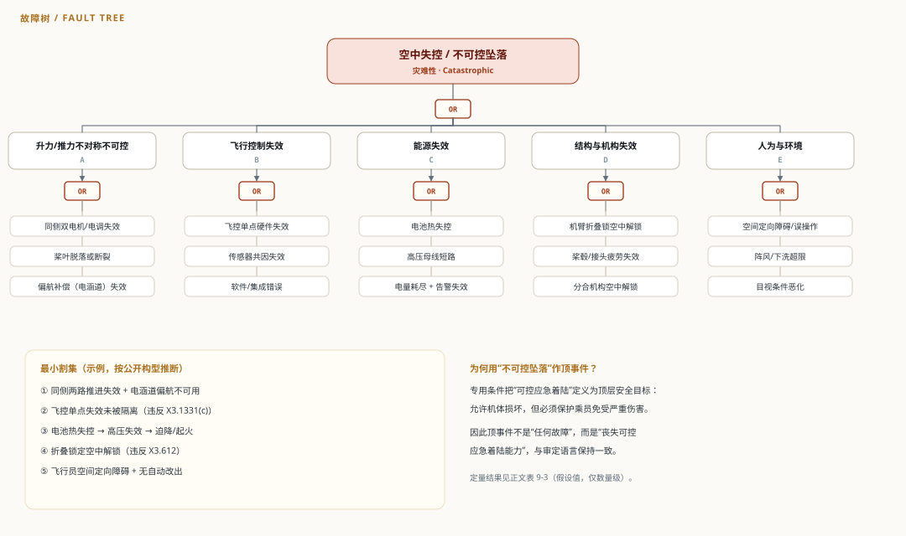
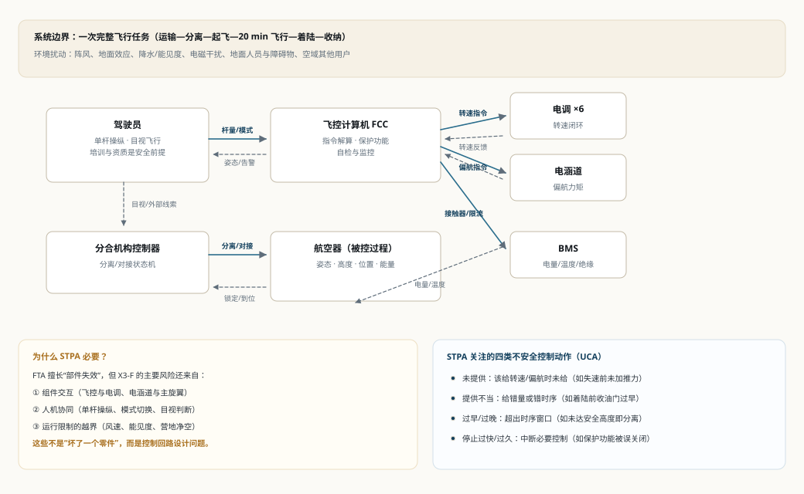

一架允许
摔坏的飞机，
怎样才算安全？
X3-F 的审定基础把“可控应急着陆”写成顶层目标：机体损坏可以接受，乘员不得受严重伤害。 这改变了安全分析的全部逻辑——不是防止一切故障，而是保证任何单一故障都不会夺走“可控”二字。
01执行摘要Executive summary
本文按课程给出的“智能运载工具安全系统工程”九步流程，对 X3-F 做一次可审计的安全分析。 结论可以压缩成一句话：它的安全论证是“用运行包线换安全等级”的典型案例——在 120 m、20 km、昼间目视、营地隔离的边界内， 风险可以被控制在轻型运动航空器的量级；一旦越出这个边界，现有证据不足以支撑任何更强的安全声明。
- 顶层目标不是“不摔”，而是“摔得住”。专用条件把“可控应急着陆”定义为：驾驶员能选择着陆方向与区域， 着陆时保护乘员免受严重伤害，机体部分损坏可接受。[1] 这决定了 FHA 的顶事件应是“丧失可控应急着陆能力”，而不是“任何故障”。
- 审定基础是 LSA 专用条件，不是运输类规则。没有引用 DO-178C/DO-254，没有 10⁻⁹ 的定量失效概率要求， 也没有闪电直接效应、结冰、噪声、水上迫降等条款。这不是缺陷，而是与“私人娱乐、昼间目视、不商业载客”的用途相匹配的有边界的标准。
- 三条不能赌的路径：飞控、电池、折叠锁定。专用条件对这三者都写了“单点失效不得导致灾难性状态”（X3.1331、X3.951、X3.612）。 但飞控的冗余度、电池包数量与拓扑均未公开，因此本文只能按条款倒推应有架构，并把它列为“必须验证的假设”。
- 定量分析显示：风险由“人”主导，而不是由“件”主导。在合理假设下，顶事件约 10⁻⁴/飞行小时量级， 其中飞行员环节贡献超过 90%；把飞控做成双余度只能降低不到 10%。这意味着培训、包线保护与运行限制的边际安全收益，远高于再增加一套硬件。
- 分体式带来了四类独有风险。分离/对接、运输固定、折叠机构、家庭地库充电——它们不在传统航空器的危险清单里， 却恰恰是这款产品最容易出问题的地方。安全案例必须为它们单独立章。
- 安全结论是“有条件可接受”。条件包括：TC 取证、飞控与电池的单点失效证据、折叠锁定互锁、营地隔离与培训体系、飞行数据记录。 缺少任何一项，安全案例都只能停在“定性符合、待验证”。
作业一证明它“只能做体验”，作业二解释“为什么体验模式反而更安全”：把运行包线收窄，本身就是最有效的安全措施。 反过来说，任何试图把它推向商业载客的努力，都会同时击穿商业模式与安全论证两块地基。
02安全边界与审定基础Certification basis
2.1 审定基础：一份“一事一议”的专用条件
X3-F 按 CCAR-21-R5 申请型号合格证，申请类别为轻型运动航空器（LSA）。由于“电动多旋翼”没有现成适航标准， 民航局为其制定专用条件，编号体系为 X3.1–X3.1581，并附 A–E 五个附件（持续适航文件、飞行手册、电动发动机、螺旋桨、动力电池）。[1] 这套条款的结构基本沿用了轻型航空器的逻辑，但针对电推进、电池、电涵道与折叠机构增加了专门条款。
| 条款 | 核心要求 | 分析含义 |
|---|---|---|
| X3.1(c) | 定义“可控应急着陆”：可选择着陆方向与区域，着陆时保护乘员免受严重伤害；部分损坏可接受 | 顶层安全目标的官方表述，FHA 顶事件由此定义 |
| X3.25 / X3.303 | 最大重量按 77 kg/乘员计；安全系数与强度要求 | 重量预算与结构裕度的基准 |
| X3.49 / X3.51 / X3.65 | 悬停、起飞、爬升性能；临界电动发动机失效后仍能安全着陆 | 单发失效是“设计工况”，不是“事故” |
| X3.143 / X3.151 | 操纵性与机动性；不得要求特殊技巧 | 人机界面的安全需求来源 |
| X3.561 | 应急着陆情况：结构须给乘员避免严重受伤的合理机会 | 被动安全的顶层条款 |
| X3.612 / X3.729 | 桨叶、机臂、起落架的折叠与锁定机构：必须防止飞行中失效 | 分体式独有风险的第一道防线 |
| X3.785 / X3.807 | 座椅、安全带与肩带；应急出口 | 约束系统与撤离通道 |
| X3.951(d)(e) | 电池管理系统、高压配电：不得由单点失效导致灾难性状态 | 能量系统的单点失效准则 |
| X3.968 | 火灾与电击预防；地面隔离措施不得依赖处理器或软件 | “硬件断开优先于软件断开”的原则 |
| X3.1308 | HIRF 保护：失效会妨碍可控应急着陆的系统须满足要求 | 电磁环境是安全相关环境 |
| X3.1329 | 自动驾驶：可超控、可迅速断开、模式须明确指示 | 自动化与人因的核心条款 |
| X3.1331 | 飞控：姿态角/偏航率/过载/速度保护；单点失效不得灾难性；飞行前自检与全程监控 | 飞控安全需求的总纲 |
| X3.1433 | 电涵道：单发失效后提供偏航力矩；叶片 2 倍离心载荷试验 | 偏航冗余的专用设计 |
| 附件 E | 动力电池：热失控、膨胀、爆炸、有毒气体；失效告警与自动断开充电 | 电池安全的符合性方法 |
2.2 条款覆盖的缺口：比“有什么”更重要的是“没有什么”
安全分析不能只看条款写了什么，还要看它没写什么。下表列出与同级别/更高级别航空器相比，专用条件未覆盖的领域。 这些缺口不是“违法”，而是“标准与用途匹配”的结果；但它们构成安全案例中必须显式声明的剩余风险。
| 缺口 | 通常由什么覆盖 | 对 X3-F 的影响 | 本文建议 |
|---|---|---|---|
| 软件保证等级 | RTCA DO-178C（机载软件）、DO-254（复杂电子硬件） | 飞控与电池管理软件的开发保证无法按 DAL 评价 | 企业自设 DAL B/C 目标并公开审定基础中的软件方法 |
| 定量失效概率 | CS/CCAR-27/29 的 10⁻⁹（灾难性）等要求 | 无法用“概率”论证，只能靠“单点失效准则 + 运行限制” | 明确“单点失效不得灾难性”，并对多点和共因做定性分析 |
| 闪电直接效应 | CCAR-25/27 的闪电防护条款 | 有 HIRF 条款，但无直接雷击条款 | 以“昼间目视 + 低空 + 规避雷雨”运行限制补偿 |
| 结冰 | 结冰审定条款（附录 C/D） | 无结冰条件运行要求 | 运行手册明确“结冰条件下禁飞” |
| 噪声审定 | CCAR-36 等噪声标准 | 营地社区噪声无法依标准评价 | 以营地选址、时段与实测噪声控制 |
| 水上迫降 / 应急撤离演示 | ditching 与撤离演示条款 | 无水上迫降要求，撤离仅靠出口尺寸 | 运行限制避开大面积水域；营地配置救援 |
| 飞行记录设备 | FDR/CVR 要求（运输类） | 无强制记录设备，事故调查与数据闭环困难 | 建议加装轻量化飞行数据记录与云端回传 |
| 商业载客运行 | CCAR-135/121 与运营合格证（OC） | 预期用途明确“不用于商业载客” | 不得以“体验”名义变相载客运营 |
① 用途即边界：私人娱乐 + 培训，不商业载客；② 环境即边界：昼间目视、120 m AGL、20 km； ③ 运行即边界：营地隔离、持证驾驶、按手册维护。三条中任何一条被突破，专用条件所隐含的安全水平就不再成立。
03步骤 0 · 安全文化与安全管理Safety management
课程把“安全文化与安全管理”放在第 0 步，而不是最后一步，是因为它决定了后面八步是否真的被执行。 对一家从汽车行业切入航空的企业，这一步的难点不是“写文件”，而是把汽车行业的迭代节奏，切换到航空行业的证据节奏。
| 要素 | 应有内容 | 为什么对这款产品重要 | 公开证据 |
|---|---|---|---|
| 安全方针 | 以“可控应急着陆”为顶层目标；安全优先于性能与交付 | 决定资源在“取证”与“交付”之间如何分配 | 未公开 |
| 设计保证系统（DAS） | 独立于设计的符合性核查；委任代表（DER）机制 | TC 审查的核心组织能力 | 间接（TC/PC 受理） |
| 变更管理 | 设计、软件、供应商变更的适航影响评估 | 折叠机构、电池、OTA 都是高风险变更点 | 未公开 |
| 供应商管理 | 适航件追溯、PPAP、二供导入验证 | 电芯、电推进、飞控来自不同供应链 | 定点公告可部分印证 |
| 安全绩效指标 | 每千架次事件率、计划外着陆率、告警准确率、补能异常率 | 体验型产品运行频次低，必须靠指标而非事故积累经验 | 未公开 |
| 安全文化 | 自愿报告、无惩罚上报、事件复盘 | 早期用户是“试飞员”，反馈渠道决定改进速度 | 未公开 |
这里有一个结构性风险：产品以“消费电子”的节奏交付，但安全证据必须以“航空”的节奏积累。 汽车可以靠 OTA 修复缺陷，航空器的每一次软件变更都可能触发适航影响评估。若企业把 OTA 当作主要修复手段， 就会出现“运行中的版本”与“审定过的版本”不一致的问题——这是本文建议重点关注的管理风险。
04步骤 1 · 功能与场景定义Functions & scenarios
4.1 任务剖面：一次飞行有七个阶段，风险分布极不均匀
| 阶段 | 典型时长 | 关键动作 | 主要风险 | 暴露权重 |
|---|---|---|---|---|
| ① 地面运输 | 数十分钟–数小时 | 飞行体固定于后备舱；道路行驶 | 固定失效、追尾、电池受撞 | 中 |
| ② 分离与展开 | ≈ 5 min | 自动分离、机臂展开、橇架撑起、自检 | 夹伤、展开未锁定、自检漏检 | 高 |
| ③ 起飞 | < 1 min | 垂直爬升、姿态建立 | 非预期升力、地面人员、阵风 | 高 |
| ④ 巡航（20 min 内） | 10–18 min | 目视飞行、高度保持、避障 | 空间定向障碍、障碍物、电量管理 | 中 |
| ⑤ 进近与着陆 | 1–3 min | 下降、悬停、接地 | 下沉率大、地面效应、侧风 | 高 |
| ⑥ 收纳与结合 | ≈ 5 min | 折叠、对接、锁止、充电 | 对接失败、夹伤、充电异常 | 高 |
| ⑦ 停放与充电 | 数小时 | 地库/营地停放、补能 | 热失控、有害气体、儿童误入 | 低但后果重 |
4.2 功能清单与失效后果
| 编号 | 功能 | 子功能 | 功能失效后果 |
|---|---|---|---|
| F1 | 产生升力 | 6 路电推进提供总推力 | 升力不足 → 不可控下降 |
| F2 | 姿态控制 | 差动转速产生三轴力矩 | 姿态失控 → 翻转/坠落 |
| F3 | 偏航控制 | 电涵道在主旋翼失效后提供偏航力矩 | 偏航不可控 → 无法对准迫降方向 |
| F4 | 能量供给 | 电池 + 高压配电 + BMS | 动力丧失 / 热失控 / 起火 |
| F5 | 飞行控制 | 电传操纵、保护功能、自检与监控 | 错误指令 / 保护失效 → 不可控 |
| F6 | 状态感知 | IMU、气压高度、GNSS、磁罗盘 | 错误姿态/高度 → 空间定向障碍 |
| F7 | 结构承载 | 机身、机臂、接头、起落架 | 结构失效 → 空中解体 |
| F8 | 折叠与锁定 | 机臂/桨叶/橇架折叠与锁定 | 空中解锁 → 失控 |
| F9 | 分合与固定 | 分离、对接、锁止、运输固定 | 空中分离 / 运输中松脱 |
| F10 | 乘员保护 | 座椅、安全带、应急出口、吸能 | 应急着陆时乘员受伤 |
| F11 | 告警与显示 | 电量、转速、模式、保护门限 | 信息缺失 → 误判/误操作 |
| F12 | 充电与补能 | 陆行体充电、地面充电、隔离 | 过充/电弧/热失控 |
4.3 运行设计条件（ODC）：安全论证的“适用域”
| 维度 | 限制 | 来源 | 越界后果 |
|---|---|---|---|
| 时间 | 仅昼间 | 专用条件 | 目视避障能力丧失，碰撞风险陡增 |
| 气象 | 目视气象条件（VMC） | 专用条件 | 空间定向障碍、无法保持间隔 |
| 高度 | ≤ 120 m AGL | 专用条件 | 进入其他空域用户活动层 |
| 距离/能量 | 航程 ≤ 20 km、航时 ≤ 20 min | 专用条件 | 电量耗尽迫降 |
| 风 | 建议地面风 ≤ 6 m/s、无强阵风/下洗 | 建议 | 姿态余量不足、着陆偏差 |
| 能见度 | 建议 ≥ 5 km、云底高 ≥ 300 m | 建议 | 避障与迫降场选择困难 |
| 温度 | 建议 0–40 ℃（电池性能边界） | 建议 | 低温掉电、高温限功率 |
| 场地 | 营地/起降点，设置隔离区与净空 | 建议 | 地面人员进入旋翼区 |
| 人员 | 持证驾驶员 + 地面安全员 | 建议 | 误操作、旁观者干扰 |
| 维护 | 按持续适航文件执行航前/航后检查 | 专用条件 | 带病飞行、折叠锁定失效 |
05步骤 2 · 安全分析方法Methods

5.1 方法选择：每种方法只回答一类问题
| 方法 | 回答的问题 | 输出 | 本文用途 |
|---|---|---|---|
| FHA | 哪些功能失效会危及安全？严重度多高？ | 失效条件清单、严重度分类、安全需求 | 专项 A，12 条失效条件 |
| PSSA | 架构能否满足 FHA 提出的安全需求？ | 架构安全需求、冗余与独立性要求 | §6 架构分析 |
| SSA | 实现后的系统是否真的满足？ | 符合性证据、剩余风险 | §10–11 验证与论证 |
| FTA | 顶事件由哪些组合导致？概率量级？ | 割集、概率、敏感性 | 专项 B，定量 |
| FMEA | 单个部件失效的模式与影响？ | 失效模式表、检测手段 | §7 硬件分析 |
| CCA / ZSA | 是否存在共因/区域失效？ | 共因清单、隔离要求 | §6.3 共因分析 |
| STPA | 控制回路是否会产生不安全控制动作？ | UCA、丢失约束、安全需求 | 专项 C，10 条 UCA |
| HARA（汽车侧） | 地面行驶与充电的汽车安全等级？ | ASIL 等级、安全目标 | §9 地面场景 |
| TARA | 网络攻击路径与影响？ | 威胁场景、措施 | §8.3 |
| GSN | 证据是否足以支撑安全声明？ | 目标—策略—证据结构 | §11 安全案例 |
5.2 标准矩阵：三套体系同时适用
| 标准 | 领域 | 在本案例中的角色 | 强度 |
|---|---|---|---|
| CCAR-21-R5 + X3 专用条件 | 适航审定 | 唯一的强制审定基础 | 强制 |
| SAE ARP4754A / 4761A | 系统开发与安全评估 | FHA/PSSA/SSA/FTA/CCA 的方法来源 | 参考（行业惯例） |
| RTCA DO-178C / DO-254 | 机载软件/复杂电子硬件 | 专用条件未引用；建议作为自设保证目标 | 参考 |
| RTCA DO-160G | 机载设备环境条件 | 温度、振动、湿度、EMC 试验依据 | 参考 |
| ISO 26262:2018 | 道路车辆功能安全 | 陆行体、充电与地面系统的 E/E 安全 | 参考（汽车侧） |
| ISO 21448:2022 | 预期功能安全（SOTIF） | 性能局限与合理误用（阵风、目视、模式混淆） | 参考 |
| ISO/SAE 21434:2021 | 网络安全 | 固件、数据链、充电通信的 TARA | 参考 |
| EASA SC-VTOL-01 | eVTOL 专用条件 | 对照“更高安全等级”的要求，识别差距 | 对照 |
| ASTM F2506-22 | 轻型运动航空器螺旋桨 | 专用条件 X3.905 直接引用 | 强制（引用） |
对这款产品，FTA 的边际价值低于 STPA。原因很简单：它的主要风险不是“某个部件坏了”，而是“人在一个受限包线里做了错误决策”、 “两个本应独立的系统共享了同一个电源/传感器”、“折叠机构在地面反复使用后间隙变大”。这些都属于控制回路与系统交互问题， 正是 STPA 的强项。因此本文把 STPA 放在与 FTA 同等的位置，而不是附庸。
06步骤 3 · 系统安全架构Safety architecture

6.1 冗余策略：需要证明的是“单点不致命”
| 功能 | 单点失效后果 | 应有架构 | 现状判断 | 必须验证 |
|---|---|---|---|---|
| 升力（6 路推进） | 单发失效 → 推力不对称 | ≥ 6 路独立；单发失效后可继续可控飞行 | 满足（6 路，专用条件按“临界发动机失效”设计） | 单发失效试飞与着陆距离 |
| 偏航 | 偏航不可控 → 无法对准迫降方向 | 电涵道独立备份 | 有专门设计（X3.1433） | 单发失效后偏航力矩实测 |
| 飞控 | 失控 → 灾难性 | 双余度或异构冗余 + 监控 | 未公开（若单通道则不满足 X3.1331(c)） | 架构图、单点失效分析、故障注入 |
| 姿态传感 | 错误姿态 → 空间定向障碍 | 多余度 + 交叉校验 | 推断为多余度 | 传感器配置、故障隔离逻辑 |
| 能量（电池） | 热失控 / 失电 | 包级隔离、熔断、手动断开 | 未公开包数（X3.951 要求单点不灾难） | 包拓扑、隔离试验、滥用试验 |
| 折叠锁定 | 空中解锁 → 失控 | 机械锁 + 到位检测 + 飞行互锁 | 条款要求明确（X3.612/729） | 锁定指示、误锁检测、循环试验 |
| 分合机构 | 空中分离 / 地面夹伤 | 状态机 + 空中禁止解锁 + 双人确认 | 条款未单列（需自行定义） | 互锁逻辑、失效注入 |
| 告警 | 信息缺失 → 误判 | 独立告警通道 + 明确优先级 | 条款要求（X3.1303/1331） | 告警优先级与误报率 |
6.2 典型安全架构模式的映射
课程列出了 1oo1、1oo2、2oo2、1oo3、2oo3、1oo2D 等典型架构。把它们映射到 X3-F 的关键功能，可以看出哪些地方“必须冗余”、哪些地方“冗余不划算”：
| 功能 | 建议模式 | 理由 | 代价 |
|---|---|---|---|
| 飞控计算 | 2oo2（或 1oo2D） | 单点失效必须可探测并切换；两套独立计算可交叉比对 | 重量、功耗、软件复杂度 |
| 姿态传感 | 2oo3 | 三套传感器可表决，避免单点错误姿态 | 成本与安装空间 |
| 电推进 | 6 路并联（降级运行） | 单发失效后仍有 5 路，可继续可控飞行 | 已在构型中实现 |
| 电池 | 双包隔离（1oo2 思路） | 单包热失控时另一包仍可供电迫降 | 重量与 BMS 复杂度 |
| 折叠锁定 | 机械锁 + 电气指示（1oo1 + 监控） | 锁定是机械事件，靠“检测 + 互锁”而非冗余 | 需高可靠到位传感器 |
| 告警 | 独立通道（1oo1 + 自检） | 主通道失效时仍能告警 | 布线重量 |
6.3 共因与区域分析（CCA/ZSA）
“两套”不等于“独立”。如果两套飞控共用同一电源、同一传感器或同一连接器，它们会在同一个故障下同时失效。 对 X3-F，最需要警惕的共因有四类：
- 电源共因：飞控、电调、电涵道若共用一条高压母线，母线短路会同时夺走控制与推力。
- 传感器共因：IMU 与气压高度若安装在同一区域，局部结构变形或进水会同时污染两者。
- 环境共因：HIRF、静电放电、雷击感应会同时影响未屏蔽的多个电子系统。
- 软件共因：同一套飞控软件的两个通道，若共用同一份代码与同一个编译器，则“双通道”对软件错误无效。
这也是为什么“双余度”必须配合异构（不同供应商/不同算法/不同编译器）才有意义。专用条件没有强制要求异构， 但 X3.1331(d) 要求“减缓措施避免因飞控集成部件故障导致部件之间产生的交互影响”，这实际上已经在要求做共因分析。
如果飞控是单通道，那么 X3.1331(c)“单点失效不得导致灾难性状态”只能通过“单点失效概率极低”来论证， 而这在 LSA 体系下缺乏定量标准，最终会变成“定性可信但不可证”。这是本文认为最需要企业公开的一项证据—— 它比任何性能参数都更能决定这款产品能否走向更大的运行包线。
07步骤 4 · 硬件安全设计Hardware
硬件层的安全设计有一个原则：能用物理隔离解决的，不要用软件解决。专用条件在 X3.968 里写得很直白—— 地面断开动力电池的措施“不应依赖任何处理器或软件动作”。这条要求的背后是航空安全的一条经验：软件会死机，继电器不会。
| 部件 | 失效模式 | 影响 | 缓解措施 | 检测 / 验证 |
|---|---|---|---|---|
| 动力电池（高硅高镍，25C） | 内短路 → 热失控 | 起火、失电、结构损伤 | 包级隔离、泄压定向、隔热、熔断、手动断开 | 滥用试验（针刺/过充/热箱）、温度与电压监控 |
| BMS | 过流/过温未切断 | 热失控、功率丧失 | 独立硬件保护、双路采样、故障降级 | 故障注入、单点失效分析（X3.951(d)） |
| 高压配电 | 母线短路 / 接触器粘连 | 全部动力丧失、电弧 | 熔断、预充、双通道、绝缘监测 | 短路试验、粘连检测 |
| 电动发动机 / 电调 | 堵转、退磁、功率管击穿 | 单路推力丧失 | 6 路独立、单发失效后降级飞行 | 单发失效试飞（X3.49/51/65） |
| 定距桨 | 桨叶裂纹、动平衡破坏 | 振动、推力丧失 | 疲劳寿命限制、定期检查、2 倍离心载荷试验 | 桨叶试验、振动监控（X3.251） |
| 电涵道 | 叶片失效、卡滞 | 偏航备份丧失 | 2 倍离心载荷设计、状态指示 | X3.1433 旋转/静拉试验 |
| 折叠锁定机构 | 未锁到位 / 空中解锁 / 间隙增大 | 机臂摆动、失控 | 机械锁 + 到位检测 + 飞行互锁 + 防误操作 | 循环试验、误锁检测、X3.612/729 |
| 起落架（四点橇式） | 落震吸能不足、折断 | 着陆冲击传给乘员 | 吸能设计、储备能量试验 | 落震试验（X3.723–727） |
| 结构/接头 | 疲劳裂纹、颤振 | 空中解体 | 疲劳寿命、刚度与颤振分析、检查大纲 | 静力/疲劳试验（X3.571/629） |
| 座椅与安全带 | 约束失效、二次碰撞 | 应急着陆乘员重伤 | 四点式安全带、刚性件包裹、按 77 kg 设计 | 静强度试验（X3.561/785） |
7.1 电池：最重的部件，也是最难论证的部件
电池在 X3-F 上有三重身份：能量源、重量大头、火灾风险源。专用条件对它的要求集中在附件 E： 必须明确失效模式（热失控、膨胀、爆炸、有毒物质排放），必须有失效敏感与告警系统，必须能在失效时自动断开充电电源。[1] 而 X3.951 进一步要求 BMS 与高压配电“不得由单点失效导致灾难性状态”。
这三条要求组合起来，实际上强制了一个设计选择：电池不能是“一个大包”。如果所有电芯共用一个包、一套 BMS、一条母线， 那么任何一个单点故障都可能同时满足“热失控 + 失电 + 起火”三个后果。要让单点失效不致命，必须有包级隔离与独立保护。 公开信息没有披露包的数量与拓扑，这是本文反复标注的“待验证假设”。
专用条件要求“25C 峰值放电”——这是为垂直起降的瞬时功率准备的。但高倍率放电会同时带来发热与内阻压降， 在低电量时尤其明显。这意味着“电量告警”不能只报百分比，还要报“可用功率”。若告警只基于 SOC（荷电状态）， 飞行员可能在 20% 电量时仍尝试复飞，然后在爬升阶段因功率不足而掉高。这是一个典型的 SOTIF 问题，而不是功能安全问题。
7.2 折叠机构：分体式的“阿喀琉斯之踵”
X3.612 要求折叠与锁定机构“安全可靠地完成展开、折叠和锁定”，并“防止锁定机构在飞行中失效”；X3.729 对起落架折叠锁定提出同样要求。 这两条看似普通，实则极难：折叠机构既要轻（否则吃掉航时），又要反复使用数万次（消费品的频次）， 还要在振动、温度、沙尘、雨水下保持锁定可靠。传统航空器的起落架不会每天折叠十次，而这款产品会。
因此，折叠机构的安全论证不能只做“静力试验”，必须做循环寿命 + 磨损 + 误操作三类试验，并配合“锁定指示 + 飞行互锁”： 只要任一锁点未到位，飞控就禁止起飞。这条互锁逻辑应被视为安全关键功能，而不是便利功能。
08步骤 5 · 软件与智能系统Software & autonomy
8.1 飞控：保护功能是“最后一道软件防线”
X3.1331 把飞控的保护功能写得很细：姿态角限制、偏航角变化率限制、法向过载限制、速度限制；每个保护功能的启动必须平滑、 与飞行阶段适应；多个保护同时作用时不得产生不利耦合；接近门限时要告警。[1] 这些要求的本质是：让一个非专业飞行员也不会把飞机飞出包线。
| 保护功能 | 防止的危险 | 失效后果 | 验证要点 |
|---|---|---|---|
| 姿态角限制 | 大姿态导致升力丧失或翻转 | 飞行员可把飞机翻过来 | 边界扫描、抗饱和、平滑启动 |
| 偏航角变化率限制 | 尾旋/失控旋转 | 定向障碍、无法改出 | 阶跃输入响应、速率限幅 |
| 法向过载限制 | 结构超载 | 结构损伤/解体 | 突风与急操纵组合 |
| 速度限制 | 超过 VNE 72 km/h | 桨叶/结构超载、振动 | 俯冲试验、限速优先级 |
| 保护门限告警 | 飞行员不知道已接近边界 | 误判余量 | 告警时机与误报率 |
8.2 自动化：手动/自动双模式的“模式混淆”风险
X3.1329 要求自动驾驶可被驾驶员超控、可迅速断开、且必须明确指示当前模式（不能只用开关位置指示）。这条要求的现实背景是： 在单杆操纵的飞行器上，飞行员很容易搞不清“现在是谁在飞”。当自动模式在低空突然断开，飞行员需要立即接管， 而人的反应时间（约 1–3 s）在 120 m 高度、5 m/s 下降率下意味着 5–15 m 的高度损失。
因此，自动化的安全需求不是“更智能”，而是“更可预测”：模式切换必须有明确告警、有过渡过程、有最低高度限制（低于某高度禁止自动断开）。 这与汽车行业 L3 接管的教训完全一致，也是课程把 SOTIF 与 HMI 放在一起讲的原因。[16]
8.3 SOTIF：没有故障，也会出事
| 场景 | 触发条件 | 危险机理 | 措施 |
|---|---|---|---|
| 地面效应 | 低高度悬停/着陆 | 升力突变、吸附、侧向力 | 着陆包线限制、下降率监控 |
| 阵风与下洗 | 营地周边建筑/树林 | 姿态扰动、余量不足 | 风速限值、阵风告警、姿态保护 |
| 目视误判 | 逆光、雪地、水面 | 高度/距离判断错误 | 目视条件限制、高度表辅助 |
| 单杆操纵混淆 | 手动/自动切换 | 错误输入、过量修正 | 模式指示、操纵逻辑一致性、培训 |
| 低电量焦虑 | 返航决策 | 拖延返航、迫降 | 可用功率告警、强制返航提示 |
| 旁观者干扰 | 营地人群、拍摄 | 飞行员分心、地面人员接近 | 隔离区、地面安全员、飞行前简报 |
| 折叠未锁提示不清 | 展开后自检 | 带病起飞 | 锁定指示、禁止起飞互锁 |
8.4 网络安全：一架会联网的飞机
飞行器与陆行体、营地、云端之间存在数据链路；充电接口、维护接口、OTA 都是潜在攻击面。按 ISO/SAE 21434 的 TARA 思路， 至少应覆盖四类资产：飞控软件与参数、电池管理、分合机构控制、运行数据。威胁包括未授权固件、参数篡改、拒绝服务、数据泄露。
| 资产 | 威胁场景 | 影响 | 措施 |
|---|---|---|---|
| 飞控软件/参数 | 未授权刷写、参数越界 | 姿态失控 | 签名固件、安全启动、参数完整性校验 |
| 电池管理 | 篡改限流/温度阈值 | 热失控 | 只读关键阈值、独立硬件保护 |
| 分合机构 | 伪造解锁指令 | 地面/空中分离 | 指令认证、空中物理互锁 |
| 数据链 | 干扰、欺骗 | 失联、错误指令 | 跳频/加密、失联保护逻辑 |
| 运行数据 | 泄露用户位置 | 隐私与合规 | 最小化采集、加密存储 |
专用条件没有引用 DO-178C，也没有规定软件等级。这不意味着软件不重要，而是意味着“用什么方法保证软件”被留给了企业自证。 对于一个由电传飞控控制、飞行员只有单杆输入的系统，软件错误的后果是灾难性的。本文建议：按 DAL B（灾难性）自设目标， 至少做到需求—设计—代码—测试的双向追溯、独立验证与配置管理，并把这些证据纳入 TC 符合性文件。
09步骤 6 · 机械/化学/电气与人因Physical & human
| 危险源 | 暴露场景 | 后果 | 措施 |
|---|---|---|---|
| 高压（800 V 级） | 维护、充电、涉水、碰撞 | 电击、电弧、火灾 | 绝缘监测、互锁、手动隔离、警示标识 |
| 电池热失控 | 飞行、充电、地库停放 | 起火、有毒气体 | 包级隔离、泄压、温度监控、消防配置 |
| 桨叶/旋翼 | 地面人员接近、登离机 | 割伤、致命冲击 | 隔离区、桨叶防护、登机顺序 |
| 折叠/对接机构 | 展开、收纳、对接 | 夹伤、挤压 | 防夹设计、双人确认、急停 |
| 噪声 | 营地周边社区 | 扰民、投诉、运行时段受限 | 选址、时段、实测噪声、隔声屏障 |
| 低温/高温 | 冬季/夏季户外 | 掉电、限功率、材料性能下降 | 温度限制、预热/预冷、性能修正 |
| 沙尘/盐雾/雨水 | 营地、沿海 | 腐蚀、卡滞、绝缘下降 | 防护等级、定期检查、润滑规范 |
9.1 人因：被低估的主导因素
这款产品的飞行员不是航线飞行员，而是“会开车的飞行爱好者”。他们可能一年只飞几十架次，目视飞行，单杆操纵， 在 120 m 高度、20 min 的短任务中完成起飞、巡航、着陆。这种“低小时数 + 高自由度 + 低余量”的组合，是人因风险的高发区。
- 空间定向障碍：目视飞行中，地景缺乏参照（水面、雪地、夜间虽被禁止但黄昏仍可能）会导致姿态误判。
- 技能退化：低频使用意味着应急程序不熟练；而应急窗口只有几十秒。
- 过度自信：消费品的“开着玩玩”心态与航空的“程序化”要求冲突，容易出现超风速、超载荷、超包线。
- 旁观者效应：营地场景中，飞行员可能为了“表演”而做出超出训练范围的动作。
对应的安全措施不是“写进手册”，而是设计上让人难以犯错：包线保护、低电量强制返航、风速超限禁止起飞、起飞前自检清单电子化、 以及“训练时长 + 定期复训”的运行要求。这也是本文在 FTA 中把“人”列为最大贡献项的原因。
10步骤 7 · 安全测试与验证Verification
验证的核心不是“做了多少试验”，而是每条安全需求都有对应的证据。下表把安全需求、验证方法与证据类型对齐， 并标注公开信息中是否可见。
| 需求 | 安全需求 | 验证方法 | 证据类型 | 公开证据 |
|---|---|---|---|---|
| SR-01 | 单发失效后可继续可控飞行并安全着陆 | 试飞 + 性能计算 | 试飞报告 | 部分（多机试飞） |
| SR-02 | 单发失效后偏航可控 | 电涵道台架 + 试飞 | 试验报告 | 未公开 |
| SR-03 | 飞控单点失效不导致灾难性状态 | FTA + 故障注入 + HIL | 分析 + 试验 | 未公开 |
| SR-04 | 电池单点失效不导致灾难性状态 | 滥用试验 + 隔离试验 | 试验报告 | 未公开 |
| SR-05 | 折叠锁定空中不解锁 | 循环 + 振动 + 误锁注入 | 试验报告 | 未公开 |
| SR-06 | 应急着陆时乘员免受严重伤害 | 落震 + 座椅静强度 + 分析 | 试验报告 | 未公开 |
| SR-07 | 保护功能平滑且不耦合 | 边界扫描 + 试飞 | 试飞报告 | 未公开 |
| SR-08 | 电量告警后仍可安全飞行与着陆 | 耗电试验 + 告警验证 | 试飞报告 | 未公开 |
| SR-09 | HIRF 环境下功能不受不利影响 | HIRF 试验 | 试验报告 | 未公开 |
| SR-10 | 充电时人员与设备安全 | 充电试验 + 故障注入 | 试验报告 | 部分（产品交付） |
| SR-11 | 分合机构空中不可解锁 | 互锁逻辑验证 + 失效注入 | 分析 + 试验 | 未公开 |
| SR-12 | 模式切换可预测、可超控 | HMI 评估 + 模拟机 | 评估报告 | 未公开 |
10.1 建议的试验清单（按风险排序）
- 电池滥用与隔离试验：针刺、过充、热箱、外部短路；验证单包失效不蔓延、可断开、可迫降。
- 飞控故障注入（HIL + 铁鸟台）：传感器漂移/卡死、总线中断、计算通道失效、作动器卡滞。
- 折叠机构循环与误锁试验：数万次循环后的间隙、磨损、锁止力；人为未锁到位时的互锁响应。
- 单发失效试飞：悬停、爬升、进近三个阶段的失效响应与着陆轨迹。
- 应急着陆落震：不同下沉率、不同姿态、不同地面条件下的乘员载荷。
- 环境试验：高低温、湿度、沙尘、盐雾、振动、EMC/HIRF。
- 运行场景验证：营地起降、侧风、地面人员接近、补能中断、对接失败。
11步骤 8 · 运行安全论证Safety case

11.1 风险接受：应该对齐哪个量级？
运输类航空器的灾难性失效概率目标是 10⁻⁹/飞行小时；轻型运动航空器没有这样的定量要求，其实际安全水平大致在 10⁻⁵–10⁻⁴/飞行小时量级。 要求一款 200 万元的私人娱乐飞行器达到 10⁻⁹，在重量、成本与技术上都不可行；但用“它是娱乐产品”来回避一切定量论证，同样不可接受。 本文的建议是：以 10⁻⁵/飞行小时为设计目标，以 10⁻⁴ 为不可接受阈值，并要求逐年改进。
| 风险类别 | 受影响对象 | 建议目标 | 依据 |
|---|---|---|---|
| 乘员（灾难性） | 机上 2 人 | ≤ 10⁻⁵ / 飞行小时 | 轻型运动/通用航空的实际水平 |
| 第三方地面人员 | 营地人员、旁观者 | ALARP，且明显低于乘员风险 | 非自愿风险应更严格 |
| 其他空域用户 | 无人机、直升机 | 依靠隔离空域与程序控制 | 低空目视、营地隔离 |
| 财产损失 | 机体、营地设施 | 保险可覆盖 | 商业可行性约束 |
11.2 运行限制：最便宜、最有效的安全措施
对这款产品，把“能飞的条件”收窄，比增加任何冗余都更有效。原因很直接：它的大部分风险来自包线边界之外—— 超风速、超视距、超电量、超载荷、非持证人员。运行限制把这些边界变成“不可进入”，就把大量事故消灭在发生之前。
- 气象门限：地面风 ≤ 6 m/s、无雷雨、能见度 ≥ 5 km、云底高 ≥ 300 m。
- 场地门限：营地起降点净空、隔离区半径、消防与救援配置、地面安全员。
- 人员门限：持证 + 定期复训 + 航前体检/状态自评；禁止乘客操作。
- 维护门限：航前/航后检查、折叠机构润滑与间隙检查、电池健康度阈值、桨叶寿命件管理。
- 运行门限：昼间、目视、120 m、20 km、单次 20 min、禁止商业载客。
11.3 应急程序与持续适航
应急程序（应写入飞行手册）
- 单发失效：保持姿态、选择迫降场、以最小下降率进近
- 电量告急：立即返航或就近着陆，禁止复飞
- 电池热失控：尽快着陆、远离人员、切断动力
- 失联/失控：执行预设悬停或降落逻辑
- 地面起火：切断高压、使用专用灭火剂、疏散
持续适航（PC 之后才是长跑）
- 电池健康度与循环寿命管理，设定更换阈值
- 桨叶、折叠机构、锁点的寿命件与检查大纲
- 软件版本控制与变更评估（OTA 不得绕过适航）
- 事件报告与数据回传，形成运行数据闭环
- 适航指令（AD）与服务通告（SB）的响应机制
12专项 A · 功能危害分析（FHA）FHA
FHA 的输入是 §4.2 的功能清单与 §4.3 的运行条件，输出是“失效条件—严重度—安全需求”的三元组。下表给出 13 条关键失效条件。 严重度采用航空惯例的四级分类，并在括号中给出对应的研制保证等级（DAL）类比，便于与汽车 ASIL 对照。
| 编号 | 功能 | 失效条件 | 阶段 | 后果 | 严重度 | 安全需求 |
|---|---|---|---|---|---|---|
| FC-01 | 升力 | 单路推进失效 | 全阶段 | 推力不对称、姿态扰动 | 较大（DAL C） | SR-01：可继续可控飞行并着陆 |
| FC-02 | 升力 | 同侧两路推进失效 | 低空/进近 | 滚转不可控、坠落 | 灾难性（DAL A） | SR-02：偏航/滚转补偿 + 推力裕度 |
| FC-03 | 姿态控制 | 飞控输出错误指令 | 全阶段 | 姿态失控 | 灾难性（DAL A） | SR-03：单点失效隔离 + 监控 |
| FC-04 | 偏航控制 | 偏航力矩丧失 | 单发失效后 | 无法对准迫降方向 | 危险（DAL B） | SR-02：电涵道备份 |
| FC-05 | 能量供给 | 电池热失控 | 飞行/地面 | 起火、失电 | 危险（DAL B） | SR-04：包级隔离、告警、迫降 |
| FC-06 | 能量供给 | 高压母线失效 | 全阶段 | 全部动力丧失 | 危险（DAL B） | SR-04：双通道/熔断/隔离 |
| FC-07 | 状态感知 | 错误姿态/高度信息 | 全阶段 | 空间定向障碍 | 灾难性（DAL A） | SR-03：传感器表决与告警 |
| FC-08 | 折叠锁定 | 空中解锁 | 全阶段 | 机臂摆动、失控 | 灾难性（DAL A） | SR-05：机械锁 + 互锁 + 检测 |
| FC-09 | 分合机构 | 空中解锁/分离 | 飞行中 | 飞行体脱离 | 灾难性（DAL A） | SR-11：空中禁止解锁互锁 |
| FC-10 | 乘员保护 | 应急着陆中约束失效 | 着陆 | 乘员重伤 | 较大（DAL C） | SR-06：座椅/安全带/吸能 |
| FC-11 | 能量管理 | 电量耗尽 | 巡航/进近 | 迫降 | 危险（DAL B） | SR-08：告警 + 预留 + 强制返航 |
| FC-12 | 告警/显示 | 关键信息缺失或误导 | 全阶段 | 误判/误操作 | 较大（DAL C） | SR-07/12：独立告警、模式指示 |
| FC-13 | 地面运行 | 地面人员进入旋翼区 | 起降 | 第三方伤亡 | 危险（DAL B） | SR-13：隔离区 + 地面安全员 |

13专项 B · 故障树定量分析FTA
顶事件定义为“丧失可控应急着陆能力并导致乘员严重伤害”。由于没有企业失效数据，本文采用行业量级假设（下表）， 目的不是算出精确概率，而是回答两个问题：哪条路径主导？把资源投在哪里最有效？

| 事件 | 描述 | λ 假设 | 依据 / 说明 |
|---|---|---|---|
| E1 | 飞控计算通道失效且未被隔离 | 2 × 10⁻⁶ | 单通道假设；双通道可降至 10⁻⁹ 量级 |
| E2 | 姿态传感器共因失效 | 5 × 10⁻⁷ | 未做异构时的保守值 |
| E3 | 电池热失控并导致失控 | 2.5 × 10⁻⁸ | 热失控 5×10⁻⁸ × 后果系数 0.5 |
| E4 | 高压母线短路致全失电 | 2 × 10⁻⁷ | 10⁻⁶ × 后果系数 0.2 |
| E5 | 折叠锁定空中解锁 | 3 × 10⁻⁷ | 机械锁 + 检测后的残余值 |
| E6 | 同侧双推进失效 + 偏航补偿失效 | ≈ 10⁻¹⁶ | 两独立事件相乘，可忽略 |
| E7 | 电量耗尽且告警失效 | 10⁻⁶ | 含飞行员决策失误 |
| E8 | 飞行员差错（含定向障碍、超包线） | 9 × 10⁻⁵ | 3×10⁻⁵/架次 ÷ (1/3 h) |
| 贡献项 | 概率（/飞行小时） | 占比 | 解读 |
|---|---|---|---|
| 飞行员差错 | 9.0 × 10⁻⁵ | ≈ 95.6% | 最大单一贡献，且与训练、包线保护强相关 |
| 飞控单通道失效 | 2.0 × 10⁻⁶ | ≈ 2.1% | 若为双通道可降两个数量级 |
| 电量耗尽 + 告警失效 | 1.0 × 10⁻⁶ | ≈ 1.1% | 与告警设计与返航策略相关 |
| 姿态传感器共因 | 5.0 × 10⁻⁷ | ≈ 0.5% | 异构与表决可降低 |
| 折叠锁定解锁 | 3.0 × 10⁻⁷ | ≈ 0.3% | 机械可靠性高，但循环磨损是变量 |
| 高压母线短路 | 2.0 × 10⁻⁷ | ≈ 0.2% | 熔断与隔离可进一步降低 |
| 电池热失控 | 2.5 × 10⁻⁸ | < 0.1% | 概率低但后果重，不能只看占比 |
| 合计 | ≈ 9.4 × 10⁻⁵ | 100% | 约合每 3 万架次 1 次灾难性事件 |
乐观情景（双通道飞控 + 包线保护 + 严格训练）
- 飞行员差错降至 10⁻⁵/h
- 飞控失效降至 10⁻⁹/h
- 合计约 1.1 × 10⁻⁵/h，接近通用航空水平
悲观情景（单通道 + 低频使用 + 无包线保护）
- 飞行员差错升至 3 × 10⁻⁴/h
- 飞控与传感器共因维持不变
- 合计约 3.1 × 10⁻⁴/h，明显不可接受
① 降风险的第一杠杆是人，不是件。培训、包线保护、风速/电量强制限制的边际收益，远高于再加一套飞控硬件。 ② 飞控冗余是“第二杠杆”，但它决定上限。若飞控为单通道，无论怎么训练，风险都卡在 10⁻⁵ 以上。 ③ “每 3 万架次 1 次”不是可接受结论，而是设计目标。它要求把飞行员差错压到 10⁻⁶ 量级，这只能靠“让人难以犯错”的设计，而不是“让人更小心”的口号。
14专项 C · STPASTPA

14.1 损失、危害与安全约束
| 编号 | 损失 / 危害 | 说明 |
|---|---|---|
| L-1 | 乘员伤亡 | 最高优先级 |
| L-2 | 地面人员伤亡 | 营地场景下的第三方风险 |
| L-3 | 航空器损毁 | 经济损失与声誉 |
| L-4 | 第三方财产损失 | 坠落地面的连带损失 |
| H-1 | 不可控坠落 | 导致 L-1/L-3/L-4 |
| H-2 | 非预期升力/离地 | 地面维护或乘客误操作时 |
| H-3 | 空中解体 / 部件分离 | 折叠、分合、结构失效 |
| H-4 | 地面火灾 / 电击 | 充电、储运、维护 |
14.2 不安全控制动作（UCA）
| 编号 | 控制器 | 控制动作 | 类型 | 情境 | 损失场景 |
|---|---|---|---|---|---|
| UCA-1 | 飞行员 | 增加总距/转速 | 提供不当 | 近地悬停、阵风、净空不足 | 过度爬升撞障碍或失速 |
| UCA-2 | 飞控 | 姿态保护介入/退出 | 停止过快 | 接近地面、飞行员持续输入 | 保护突然退出导致姿态突变 |
| UCA-3 | 飞控 | 偏航指令 | 未提供 | 单发失效、电涵道未就绪 | 偏航不可控，无法对准迫降方向 |
| UCA-4 | 电调 | 转速输出 | 提供不当 | 传感器故障、指令冲突 | 不对称推力导致滚转 |
| UCA-5 | BMS | 放电限流/切断 | 过晚 | 低电量、高温、内阻上升 | 爬升阶段功率不足，迫降 |
| UCA-6 | 分合机构 | 解锁 | 过早 | 未完全着陆、未停稳 | 地面翻倒或空中分离 |
| UCA-7 | 飞行员/地面人员 | 发出分离指令 | 提供不当 | 人员未撤离、未固定 | 夹伤、设备损坏 |
| UCA-8 | 维护人员 | 折叠锁定检查 | 未提供 | 复飞前、时间压力 | 空中解锁 |
| UCA-9 | 营地管理 | 隔离区管控 | 未提供 | 起降、观众靠近 | 地面人员进入旋翼区 |
| UCA-10 | 空域/飞行员 | 冲突避让 | 过晚 | 目视丢失、其他航空器 | 空中相撞 |
14.3 从 UCA 到安全约束
| 编号 | 安全约束 | 对应 UCA | 验证方式 |
|---|---|---|---|
| SC-1 | 近地 5 m 内禁止大幅总距变化，除非进入应急程序 | UCA-1 | 飞控限幅 + 试飞 |
| SC-2 | 保护功能退出必须渐变，且低于 10 m 禁止退出 | UCA-2 | 边界扫描 + HIL |
| SC-3 | 单发失效后 200 ms 内建立偏航补偿 | UCA-3 | 台架 + 试飞 |
| SC-4 | 转速指令与实际转速偏差超限时隔离该路 | UCA-4 | 故障注入 |
| SC-5 | 电量低于返航阈值时禁止继续远离基地 | UCA-5 | 耗电试验 |
| SC-6 | 空中（高度 > 2 m 或离地状态）物理禁止解锁 | UCA-6 | 互锁验证 + 失效注入 |
| SC-7 | 分离/对接必须双人确认且人员撤离 | UCA-7 | 程序演练 |
| SC-8 | 航前检查清单电子化，未完成禁止上电起飞 | UCA-8 | 系统验证 |
| SC-9 | 起降区隔离半径与地面安全员到位是起飞前提 | UCA-9 | 运行审计 |
| SC-10 | 目视丢失或冲突告警时执行预设避让/悬停 | UCA-10 | 场景演练 |
15专题 · 分体式特有风险Modular-specific risks
传统航空器的危险清单里没有“后备舱”“自动对接”“地库充电”。这些是分体式产品独有的风险源，也是最容易被“产品宣传”掩盖的部分。 它们共同的特点是：发生在地面，但后果可能在空中。
| 风险 | 机理 | 后果 | 控制措施 | 验证 |
|---|---|---|---|---|
| 空中分离/解锁 | 互锁失效、电磁干扰、软件错误、机械振动 | 飞行体脱离、灾难性 | 机械互锁 + 电气互锁 + 空中禁止逻辑 + 状态监控 | 失效注入、振动试验、软件验证 |
| 对接失败 | 对准偏差、地面不平、传感器污染 | 设备损坏、夹伤、无法运输 | 视觉/机械引导、力反馈、失败自动停止、人工接管 | 循环对接试验、误对准试验 |
| 运输固定失效 | 急刹车、颠簸、固定点疲劳 | 飞行体在舱内移位、结构损伤 | 四点固定 + 载荷监测 + 运输前检查 | 振动台、制动工况试验 |
| 折叠机构磨损 | 高频循环、沙尘、润滑失效 | 间隙增大、锁定力下降、空中解锁 | 寿命件管理、间隙检查、润滑规范、磨损告警 | 循环寿命试验、拆检 |
| 地库充电/停放 | 密闭空间、热失控、有毒气体、儿童误入 | 火灾、中毒、次生灾害 | 通风、烟温报警、充电监控、禁止在住宅地库充电（建议） | 热失控试验、气体扩散评估 |
| 维护界面错位 | 汽车 4S 店不具备航空维修能力 | 带病运行、记录缺失 | 授权维修体系、航材追溯、放行签字 | 维修体系审核 |
“地库充电”是这款产品最独特的卖点，也可能是最独特的风险。把一架 880 kg、装着数十千瓦时高倍率电池的航空器， 停放在住宅地下车库并充电，其火灾后果与“一辆电动车自燃”完全不是一个量级：疏散困难、消防难以接近、有毒烟气在密闭空间聚集。 本文建议：在产品说明与运行限制中明确“不得在住宅地库充电”，并在营地配置专用充电位与消防设施。这一条不写进手册，安全案例就不完整。
16结论与建议Conclusion
16.1 与 EH216-S 的对照：两条不同的安全路线
| 维度 | X3-F（有人驾驶，LSA） | EH216-S（无人驾驶，载人） |
|---|---|---|
| 取证状态 | TC/PC 受理，未取证 | TC（2023-10）、AC（2023-12）、PC（2024-03）、OC（2025-03） |
| 安全重心 | 飞行员 + 包线保护 + 单点失效 | 自主飞行 + 冗余 + 地面调度 |
| 人的角色 | 控制回路的一部分，也是最大风险源 | 被移出控制回路，风险转移到系统与调度 |
| 运行场景 | 私人娱乐、培训、营地 | 空中游览、点对点载人（已获 OC） |
| 对本文的启示 | 安全投入应优先“让人不犯错” | 安全投入应优先“让系统不犯错” |
16.2 五条结论
- 安全目标被用途定义。“可控应急着陆 + 不商业载客 + 昼间目视 + 120 m”共同构成了这套安全论证的适用域；离开它，论证不成立。
- 单点失效准则是最硬的约束。飞控、电池、折叠锁定三处的“单点不得灾难性”必须由架构保证，不能靠“概率很低”说服审查方。
- 风险由人主导。定量分析显示飞行员环节贡献约 95%；因此培训、包线保护、强制限制的优先级高于增加冗余。
- 分体式风险被系统性低估。分离/对接、运输固定、折叠磨损、地库充电，这四类风险不在传统清单里，却最可能出事。
- 证据缺口集中在“未公开”。飞控冗余、电池拓扑、软件保证等级、试验报告均未公开，导致安全案例只能做到“定性符合、待验证”。
16.3 七条建议（按优先级）
| 优先级 | 建议 | 解决什么问题 | 可验证的完成标志 |
|---|---|---|---|
| P0 | 公开飞控冗余架构与单点失效分析 | X3.1331(c) 的符合性无法评价 | TC 符合性文件含 FTA/PSSA 摘要 |
| P0 | 电池包级隔离与滥用试验报告 | 热失控是否蔓延未知 | 单包失效不蔓延的试验证据 |
| P0 | 折叠锁定互锁与循环寿命数据 | 空中解锁是灾难性路径 | 数万次循环 + 误锁注入试验 |
| P1 | 把“包线保护”做成不可关闭的硬限制 | 飞行员超包线是最大风险源 | 保护功能优先级与限幅验证 |
| P1 | 明确“不得在住宅地库充电”并配置营地专用充电位 | 密闭空间热失控后果极重 | 手册条款 + 营地消防配置 |
| P2 | 加装轻量化飞行数据记录与云端回传 | 事故调查与数据闭环缺失 | 每架次可回溯的飞行数据 |
| P2 | 建立航空维修授权体系（区别于汽车 4S） | 维护界面错位导致带病运行 | 授权维修点 + 放行记录 |
有条件可接受。条件是：TC 取证完成；飞控/电池/折叠锁定的单点失效证据公开并纳入符合性文件；包线保护不可关闭； 营地隔离与培训体系落地；地库充电被明确限制；飞行数据可回溯。缺一项，安全案例就少一块基石； 缺三项以上，则只能作为“受控演示”运行，而不能作为“用户产品”交付。
17参考文献References
按 GB/T 7714—2015 顺序编码；完整条目与证据说明见 参考文献页。
- 中国民用航空局. X3-F 型航空器专用条件（征求意见稿）[Z]. 2025-03. 条目
- 中国民用航空局. 民用航空产品和零部件合格审定规定（CCAR-21-R5）[S]. 2024. 条目
- 上海证券报. 小鹏汇天“陆地航母”飞行体专用条件征求意见[N]. 2025-03-19. 条目
- 上海证券报. “陆地航母”新进展：PC 申请获受理[N]. 2025-05-09. 条目
- 凤凰网科技. “陆地航母”交付时间曝光[EB/OL]. 2026-11-06. 条目
- 环球网. 中国向阿联酋交付首架飞行汽车[EB/OL]. 2026-10-21. 条目
- 国际电子商情. 核心零部件定点名单[EB/OL]. 2026-10-21. 条目
- EHANG. EH216-S 适航审定历程[EB/OL]. 条目
- SAE International. ARP4754A / ARP4761A：民用飞机与系统开发及安全评估指南[S]. 条目
- RTCA. DO-178C 机载系统和设备合格审定中的软件考虑[S]. 2011. 条目
- RTCA. DO-254 机载电子硬件设计保证指南[S]. 2000. 条目
- ISO. ISO 26262:2018 道路车辆功能安全[S]. 条目
- ISO. ISO 21448:2022 预期功能安全[S]. 条目
- ISO/SAE. ISO/SAE 21434:2021 道路车辆网络安全工程[S]. 条目
- EASA. SC-VTOL-01 垂直起降航空器专用条件[S]. 2019. 条目
- 张玉新. 飞行汽车技术基础：第五章 飞行汽车产业分析及支撑技术[Z]. 吉林大学, 2026. 条目